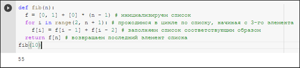
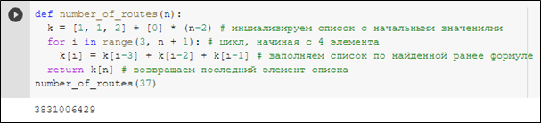

Введение
Введение Понятие алгоритма
Понятие алгоритмаДинамическое программирование
План-конспект урока:
- Тема урока: Динамическое программирование на Python
- Цели и задачи урока:
- Образовательные: познакомить учеников с понятием «динамическое программирование», рассказать в каких случаях целесообразно использовать динамическое программирование, научить школьников составлять собственные алгоритмы, использующие динамическое программирование на Python.
- Развивающие: развить у детей логическое, алгоритмическое и абстрактное мышление.
- Воспитательные: пробудить у детей интерес к данной теме и ко всему предмету информатики в целом.
- Этапы урока:
- организационный
- этап усвоения новых знаний
- первичное закрепление темы
- практическая часть
- обобщение полученных знаний и подведение итогов
- Ход урока:
- Организационный этап. Учитель приветствует учеников и даёт им немного времени для того, чтобы подготовить рабочее место и настроиться на урок.
- Этап усвоения новых знаний. Учитель объясняет новую тему: даёт определение динамического программирования, рассказывает о том, как связано динамическое программирование с рекурсией. Затем, учитель показывает простейшие примеры использования динамического программирования для решения практических задач. Если это необходимо, учитель рассказывает, почему в данном конкретном случае целесообразнее использовать динамическое программирование, а не рекурсию. Затем, учитель у доски решает несколько задач по теме «Динамическое программирование» с объяснениями. Дети конспектируют основные аспекты урока.
- Первичное закрепление знаний. Учитель задаёт ученикам устные вопросы по теме. Если ученики затрудняются на них ответить, учитель возвращается к объяснению темы.
- Практическая часть. Во время практической части ученики пытаются самостоятельно решить предложенные учителем задачи, если у них возникают трудности, учитель старается помочь им, задаёт наводящие вопросы, говорит, на какое место в конспекте урока им стоит обратить внимание.
- Обобщение полученных знаний и подведение итогов. Учитель ещё раз, тезисно, повторяет основные моменты изученной темы, подводит итоги практической части урока и задаёт домашнее задание.
Теоретический материал
Динамическое программирование — решение сложной задачи разбиением её на более простые подзадачи, при этом каждая подзадача решается только один раз.
Динамическое программирование очень похоже на рекурсию, при этом:
- динамическое программирование сверху — это, по сути, рекурсия с кешированием;
- динамическое программирование снизу — это переформулирование задачи в виде индуктивной последовательности подзадач, от крайнего случая к более сложным.
Важной составляющей динамического программирования является возможность переиспользования результатов вычислений (в программировании такой подход называется мемоизацией). Вскоре в этом можно будет убедиться, когда будет рассматриваться задача о числах Фибоначчи в контексте динамического программирования.
Для решения задач методом динамического программирования за отправную точку школьниками может быть взят следующий план:
- Решение задачи для маленьких ограничений. Во-первых, это позволяет вникнуть в задачу и лучше понять её условия. Например, если решение задачи происходит на олимпиаде, можно сравнить полученные ответы с ответами из примеров, чтобы убедиться в правильности понимания постановки задачи. Во-вторых, эти решения пригодятся в дальнейшем, уже после формулировки рекуррентной формулы, в качестве начальных значений.
- Сформулировать основную величину. От задачи к задаче такая величина, естественно, может меняться. Например, для чисел Фибоначчи эта величина Fn – n-ое число Фибоначчи, а для задачи о количестве способов у кузнечика попасть в точку n – это K[n], где n – координата целевой точки, а K[n] – количество способов попасть в эту точку. При формулировке важно, чтобы речь шла не о конкретном значении, например F5 или K[10], а именно об абстрактном Fn и K[n].
- Вывести рекуррентную формулу на основе анализа задачи. Этот пункт, пожалуй, самый сложный, и требует серьёзного осмысления задачи и рассуждения над ней. Единственный совет, применимый к данному пункту состоит в том, что следует попытаться вывести основную величину конкретной задачи, например ai из предыдущих значений величин, то есть из ai-1 , ai-2 и т.д.
- Обозначение ограничений и начальных значений. Например, в случае чисел Фибоначчи понятно, что n должно быть больше (или ровно, в зависимости от подхода к решению, а именно, число 0 мы считаем нулевым числом Фибоначчи, как это иногда делают, или первым) нуля, а также известно, что первые два числа Фибоначчи равны соответственно 0 и 1.
- Определение порядка вычисления значений. Этот пункт в подавляющем большинстве случаев актуален только для двумерного динамического программирования, так как в одномерном динамическом программировании, как правило, вычисления происходят линейно слева направо (если речь идёт о списке). Но стоит отметить, хотя и крайне редко, но всё же встречаются задачи одномерного динамического программирования, когда, например, целесообразно сначала вычислить все чётные значения, а потом все нечётные.
- Определение местонахождения ответа. Этот пункт опять-таки наиболее актуален для двумерного динамического программирования, так как в одномерном динамическом программировании ответ в подавляющем большинстве случаев находится в последнем элементе списка или в последнем значении переменной, если с целью экономии памяти список не используется.
Задачи для объяснения
Для того, чтобы школьники смогли лучше понять и прочувствовать что же из себя представляет динамическое программирование, а в дальнейшем и смогли сами его применять, необходимо рассмотреть несколько задач, которые бы наглядно демонстрировали все особенности и нюансы использования динамического программирования.
Первой такой задачей является задача о нахождении n-го числа Фибоначчи. Решение этой задачи уже было рассмотрено в блоке, посвящённом динамическому программированию. Однако, там было справедливо отмечено, что решать данную задачу с помощью рекурсии нецелесообразно из-за огромного количества повторяющихся вычислений, которые в случае с рекурсивным решением приходилось выполнять много раз. Избавиться от этой проблемы помогает как раз таки динамическое программирование. Стоить напомнить, что задача заключается в том, чтобы вычислить Fn-ое число Фибоначчи, при этом известно, что F0 равно 0, а F1 равно 1, а каждое следующее число Фибоначчи равно сумме двух предыдущих.
В контексте динамического программирования предлагается следующий алгоритм решения данной задачи. Создаётся список из n+1(связано это с тем, что отсчёт чисел Фибоначчи традиционно начинают с 0, то есть, 10-ое число Фибоначчи будет 11 в итоговом списке) элементов, первый элемент которого равен 0, а второй 1, а остальные элементы могут изначально принимать любые значения, например, также 0. Далее в цикле начиная от 2 и заканчивая n включительно заполняем список согласно формуле: Fi = Fi-1 + Fi-2. В конце возвращаем последний элемент списка, то есть элемент с индексом n. На рисунке представлен пример реализации функции, которая с помощью динамического программирования ищет n-ое число Фибоначчи:
Второй задачей, которую предлагается рассмотреть для объяснения темы «Динамическое программирование», будет «задача о кузнечике». Условие задачи следующее: на числовой прямой сидит кузнечик, который может прыгать вправо на одну, на две или на три единицы. Первоначально кузнечик находится в точке с координатой 0. Определите количество различных маршрутов кузнечика, приводящих его в точку с координатой n.
Ход решения этой задачи: обозначим количество маршрутов кузнечика, ведущих в точку с координатой n, как K[n]. Прежде всего заметим, что существует ровно один маршрут из точки 0 в точку 0 – он не содержит ни одного прыжка. В точку 1 можно прыгнуть единственным способом – из точки 0. Количество способов попасть в точку 2 равно сумме количества способов попасть в точку 0 и количества способов попасть в точку 1. Последнее утверждение с учётом принятых обозначений можно переписать следующим образом: K[2] = K[1] + K[0]. Количество способов попасть в точку 3 будет равно количеству способов попасть в точку 2 + количество способов попасть в точку 1 + количество способов попасть в точку 0 или K[3] = K[2] + K[1] + K[0].
Как вычислить K[n]? В точку кузнечик может попасть тремя способами — из точки при помощи прыжка длинной 3, из точки при помощи прыжка длиной 2 и из точки прыжком длины 1. То есть число способов попасть в точку n равно сумме числа способов попасть в точку (n-1), (n-2) и (n-3), что позволяет выписать рекуррентное соотношение: K[n] = K[n-3] + K[n-2] + K[n-1]. Теперь достаточно просто реализовать данный алгоритм вычислений в программе. Пример программы, которая вычисляет количество различных маршрутов кузнечика для того, чтобы из точки 0 попасть в точку n, представлен на рисунке 18:
Задачи для самостоятельного решения
Теперь рассмотрим задачи, которые предлагаются ученикам в качестве задач для самостоятельного решения.
Первой такой задачей будет задача модификации алгоритма вычисления n-го числа Фибоначчи с помощью динамического программирования, который рассмотрен выше. Задача состоит в том, чтобы оптимизировать вышеописанный алгоритм так, чтобы он использовал меньше памяти.
Решение следующее: если приглядеться, можно заметить, что мы храним в списке все найденные на предыдущих итерациях цикла значения чисел Фибоначчи, когда в действительности, для вычисления каждого следующего числа Фибоначчи нам достаточно хранить только 2 предыдущих значения. Таким образом, мы можем использовать всего-навсего 2 переменные f0 и f1, которые изначально принимают значение 0 и 1 соответственно, а на каждой итерации цикл в f0 мы помещаем значение f1, а в f1 сумму f0 и f1. Важно, чтобы при нахождении суммы использовалось ещё старое значение f0, а не новое. С этой целью можно было бы создать третью временную переменную, в которую мы бы запоминали предыдущее значение f0, однако Python позволяет решить данную проблему элегантнее. Пример функции, которая находит n-ое число Фибоначчи, используя динамическое программирование с использованием двух переменных, представлен рисунке:
Стоит отметить, что решение задачи о нахождении количества маршрутов кузнечика можно оптимизировать аналогичным образом, однако там понадобится количество переменных, равное количеству разнообразных прыжков кузнечика, то есть 3.
Следующей задачей на динамическое программирование, которую предлагается рассмотреть в качестве задачи для самостоятельного решения учениками, является усложнение задачи о кузнечике. Предположим, что у нас также есть кузнечик, который прыгает на 1, 2 или 3 единицы вправо и нам нужно подсчитать количество маршрутов, которыми он может добраться до точки n из точки 0. Однако, теперь, у нас есть запрещённые точки, то есть точки, в которые кузнечик не может прыгнуть. Эти точки находятся в соответствующем списке m, который устроен следующим образом: если в i-ой позиции стоит 1, то точка разрешена и кузнечик может в неё прыгнуть. Если же в i-ой позиции стоит 0, то кузнечик в эту точку прыгнуть не может.
Решение следующее: аналогично предыдущему решению, инициализируем список, где первый элемент равен 1 – начальная позиция всегда доступна. Второй элемент равен количеству способов попасть в 1 клетку, умноженную на второй элемент списка m. По идее, здесь должно было быть условие проверки, если m[1] == 0, то 0, иначе 1. Но список m устроен таким образом, что вместо проверки нам достаточно умножить нужное количество маршрутов на соответствующий элемент из списка m. Действительно, если точка запрещена, то соответствующее значение в списке m будет равно 0 и при умножении на него результат обнулится. Если же точка разрешена, что в списке m будет стоять 1, а при умножении на 1 результат не изменится. Такой же приём будет использоваться при заполнении списка k. Далее всё делаем аналогично предыдущему решению, только рекуррентная формула будет выглядеть следующим образом: K[n] = (K[n-3] + K[n-2] + K[n-1]) * m[n]. Пример реализации такого алгоритма представлен на рисунке:
Таким образом, были разработаны все материалы методического сопровождения по теме «Алгоритмы и структуры данных на языке программирования Python» для учащихся старших классов.